Chapter 5 Teaching Examples
This chapter is going to have a bunch of teaching examples in it.
5.1 The Anscombe Exercise
##About This Exercise Exercise Type: Confidence Builder
Confidence Builders are designed to get you more comfortable with R. We’ll go through bits of code more or less step-by-step, and describe the reasoning behind certain actions. Remember - it’s not cheating to copy code from this document and paste it into your R Studio console!
Exercise Suitability: Beginner
If you have R Studio installed on your machine and you know what an object is, you can work through this material.
5.2 The Anscombe Exercise
This exercise will take you through a really fun little dataset called the Anscombe Quartet. I’ve been trying to teach this exercise using data I’ve made up myself, and it’s never quite worked. Imagine my delight when I heard that Francis Anscombe had already created the perfect dataset for me! At least, according to Wikipedia, no one knows exactly how he came up with it.
The aim of this exercise is to make you more comfortable with entering code in R.
5.3 Learning Outcomes
By the end of this workshop you should be able to . . .
- Provide descriptive statistics for data
- Run a simple regression on data
- Change arguments in a function
- Create visualisations in R
5.4 The R Environment
Here are the packages you’ll need for this exercise. (Remember, if you don’t have one of these packages you can install it with the command: install.packages("packagename")
library(ggplot2)
library(gridExtra)
library(pastecs)
library(tidyr)
library(dplyr)5.5 The Anscombe Dataset
The Anscombe dataset is really interesting and comes pre-loaded as part of the package datasets. This is a package which comes as standard in any R installation and so we can look at it immediately just by typing the name of the dataset into R Studio.
R Studio will show us all rows of this dataset because it’s quite small (only 11 rows). If we had a larger dataset, it would cut off after about 10 rows.
anscombe ## x1 x2 x3 x4 y1 y2 y3 y4
## 1 10 10 10 8 8.04 9.14 7.46 6.58
## 2 8 8 8 8 6.95 8.14 6.77 5.76
## 3 13 13 13 8 7.58 8.74 12.74 7.71
## 4 9 9 9 8 8.81 8.77 7.11 8.84
## 5 11 11 11 8 8.33 9.26 7.81 8.47
## 6 14 14 14 8 9.96 8.10 8.84 7.04
## 7 6 6 6 8 7.24 6.13 6.08 5.25
## 8 4 4 4 19 4.26 3.10 5.39 12.50
## 9 12 12 12 8 10.84 9.13 8.15 5.56
## 10 7 7 7 8 4.82 7.26 6.42 7.91
## 11 5 5 5 8 5.68 4.74 5.73 6.895.6 Running Descriptive Statistics
Let’s start by exploring the means and medians of all these variables. There is a very handy command stat.desc from the packagepastecs which can do this for us.
(Note - there are LOADS of packages which give you descriptive stats. Check out this statmethods page for more examples. I just personally like pastecs.)
stat.desc(anscombe)## x1 x2 x3 x4 y1 y2 y3 y4
## nbr.val 11.000 11.000 11.000 11.000 11.000 11.000 11.000 11.000
## nbr.null 0.000 0.000 0.000 0.000 0.000 0.000 0.000 0.000
## nbr.na 0.000 0.000 0.000 0.000 0.000 0.000 0.000 0.000
## min 4.000 4.000 4.000 8.000 4.260 3.100 5.390 5.250
## max 14.000 14.000 14.000 19.000 10.840 9.260 12.740 12.500
## range 10.000 10.000 10.000 11.000 6.580 6.160 7.350 7.250
## sum 99.000 99.000 99.000 99.000 82.510 82.510 82.500 82.510
## median 9.000 9.000 9.000 8.000 7.580 8.140 7.110 7.040
## mean 9.000 9.000 9.000 9.000 7.501 7.501 7.500 7.501
## SE.mean 1.000 1.000 1.000 1.000 0.613 0.613 0.612 0.612
## CI.mean.0.95 2.228 2.228 2.228 2.228 1.365 1.365 1.364 1.364
## var 11.000 11.000 11.000 11.000 4.127 4.128 4.123 4.123
## std.dev 3.317 3.317 3.317 3.317 2.032 2.032 2.030 2.031
## coef.var 0.369 0.369 0.369 0.369 0.271 0.271 0.271 0.271For each variable in the array, stat.desc gives us:
nbr.valNumber of values within the variablenbr.nullNumber of null valuesnbr.naNumber of missing valuesminMinimum valuemaxMaximum valuerangeMaximum-minimum valuesumSum of all non-missing valuesmedianThe median valuemeanThe mean valueSE.meanThe standard error of the meanCI.mean.0.95The 95% confidence intervals of this meanvarThe variance of this variablestd.devThe standard deviation of the meancoef.varThe variation coefficient (standard deviation/mean)
With these descriptive statistics, we might want to start writing our interpretation of the data. For example …
The average score of x was 9 ±3.3 standard deviations. ### Changing Arguments in a Function
You might decide you don’t want to bother with all the elements of stat.desc and so you could explore how to modify the command by asking R help("stat.desc") which will show you the help documentation for the function. Note that it talks about arguments.
stat.desc(anscombe, basic=FALSE, norm=FALSE, p=0.99)## x1 x2 x3 x4 y1 y2 y3 y4
## median 9.000 9.000 9.000 8.000 7.580 8.140 7.110 7.040
## mean 9.000 9.000 9.000 9.000 7.501 7.501 7.500 7.501
## SE.mean 1.000 1.000 1.000 1.000 0.613 0.613 0.612 0.612
## CI.mean.0.99 3.169 3.169 3.169 3.169 1.941 1.941 1.940 1.940
## var 11.000 11.000 11.000 11.000 4.127 4.128 4.123 4.123
## std.dev 3.317 3.317 3.317 3.317 2.032 2.032 2.030 2.031
## coef.var 0.369 0.369 0.369 0.369 0.271 0.271 0.271 0.271By setting the arguments basic=FALSE and norm=FALSE, we’ve told R we only care about the information that the desc argument gives us. Note, because we only want the desc argument we don’t need to bother typing it in. It’s set to true by default. You’d get the same result by typing stat.desc(anscombe, basic=FALSE, desc=TRUE, norm=FALSE, p=0.99) which you can try yourself. We’ve also changed the confidence interval width to 0.99 (i.e. 99 %).
In this example, there’s no real harm in getting all the information stat.desc can give us, but when we start plotting the data we will want to play about with the arguments in the ggplot command, so that’s why you’re seeing them here!
5.7 Run a Regression
We’re going to run four regressions for this dataset (all four xs against all 4 ys) and explore them. This will be done using R’s inbuilt stats package, so there’s no need to load any specific package into our library.
regression1 <- lm (y1~x1, data=anscombe)
regression2 <- lm (y2~x2, data=anscombe)
regression3 <- lm (y3~x3, data=anscombe)
regression4 <- lm (y4~x4, data=anscombe)
summary (regression1)##
## Call:
## lm(formula = y1 ~ x1, data = anscombe)
##
## Residuals:
## Min 1Q Median 3Q Max
## -1.9213 -0.4558 -0.0414 0.7094 1.8388
##
## Coefficients:
## Estimate Std. Error t value Pr(>|t|)
## (Intercept) 3.000 1.125 2.67 0.0257 *
## x1 0.500 0.118 4.24 0.0022 **
## ---
## Signif. codes: 0 '***' 0.001 '**' 0.01 '*' 0.05 '.' 0.1 ' ' 1
##
## Residual standard error: 1.24 on 9 degrees of freedom
## Multiple R-squared: 0.667, Adjusted R-squared: 0.629
## F-statistic: 18 on 1 and 9 DF, p-value: 0.00217summary (regression2)##
## Call:
## lm(formula = y2 ~ x2, data = anscombe)
##
## Residuals:
## Min 1Q Median 3Q Max
## -1.901 -0.761 0.129 0.949 1.269
##
## Coefficients:
## Estimate Std. Error t value Pr(>|t|)
## (Intercept) 3.001 1.125 2.67 0.0258 *
## x2 0.500 0.118 4.24 0.0022 **
## ---
## Signif. codes: 0 '***' 0.001 '**' 0.01 '*' 0.05 '.' 0.1 ' ' 1
##
## Residual standard error: 1.24 on 9 degrees of freedom
## Multiple R-squared: 0.666, Adjusted R-squared: 0.629
## F-statistic: 18 on 1 and 9 DF, p-value: 0.00218summary (regression3)##
## Call:
## lm(formula = y3 ~ x3, data = anscombe)
##
## Residuals:
## Min 1Q Median 3Q Max
## -1.159 -0.615 -0.230 0.154 3.241
##
## Coefficients:
## Estimate Std. Error t value Pr(>|t|)
## (Intercept) 3.002 1.124 2.67 0.0256 *
## x3 0.500 0.118 4.24 0.0022 **
## ---
## Signif. codes: 0 '***' 0.001 '**' 0.01 '*' 0.05 '.' 0.1 ' ' 1
##
## Residual standard error: 1.24 on 9 degrees of freedom
## Multiple R-squared: 0.666, Adjusted R-squared: 0.629
## F-statistic: 18 on 1 and 9 DF, p-value: 0.00218summary (regression4)##
## Call:
## lm(formula = y4 ~ x4, data = anscombe)
##
## Residuals:
## Min 1Q Median 3Q Max
## -1.751 -0.831 0.000 0.809 1.839
##
## Coefficients:
## Estimate Std. Error t value Pr(>|t|)
## (Intercept) 3.002 1.124 2.67 0.0256 *
## x4 0.500 0.118 4.24 0.0022 **
## ---
## Signif. codes: 0 '***' 0.001 '**' 0.01 '*' 0.05 '.' 0.1 ' ' 1
##
## Residual standard error: 1.24 on 9 degrees of freedom
## Multiple R-squared: 0.667, Adjusted R-squared: 0.63
## F-statistic: 18 on 1 and 9 DF, p-value: 0.00216Here we might want to report these findings. > There was a significant, positive relationship between x and y (F1,9=18, p=0.002) in which x explained approximately 63% of the variation observed in y.
Now you’re probably thinking “Great! Let’s write up the paper and go home!”
5.8 Visualising Data
Everything we’ve seen so far has shown us that we have identical relationships between x and y in the Anscombe dataset. So here’s what we should have done first . . .
We’re going to use ggplot for this. (We’re also going to lean very heavily on Stella and Ian’s great ggplot tutorial which I recommend if you want to learn more about ggplot). We’ll walk through building the first chart and then build the others in one go.
5.8.1 Understanding ggplot layers
ggplot (data=anscombe, aes(x=x1, y=y1))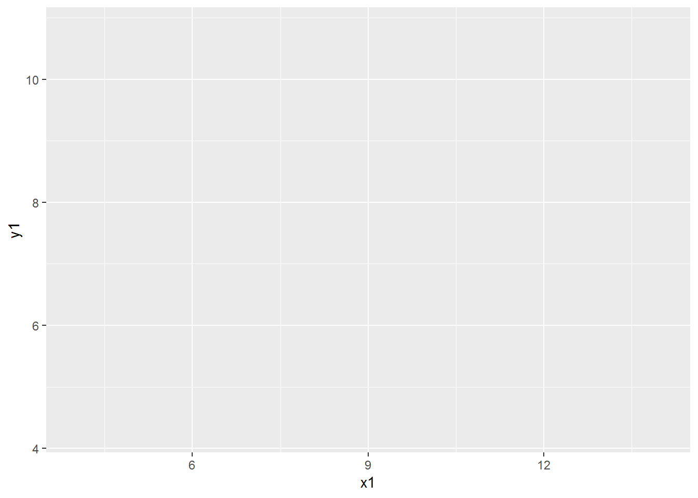
The ggplot command first needs to know what data to use, (the data argument) and then what aesthetics ( the aes argument). But you will have spotted pretty quickly that there’s no data in there yet! We need to start layering information into the ggplot command. The two most important types of layers are the geometric elements (geoms) and statistical transformations (stats).
We’ll begin by adding a layer of points with the geom_point function.
ggplot (data=anscombe, aes(x=x1, y=y1)) +
geom_point()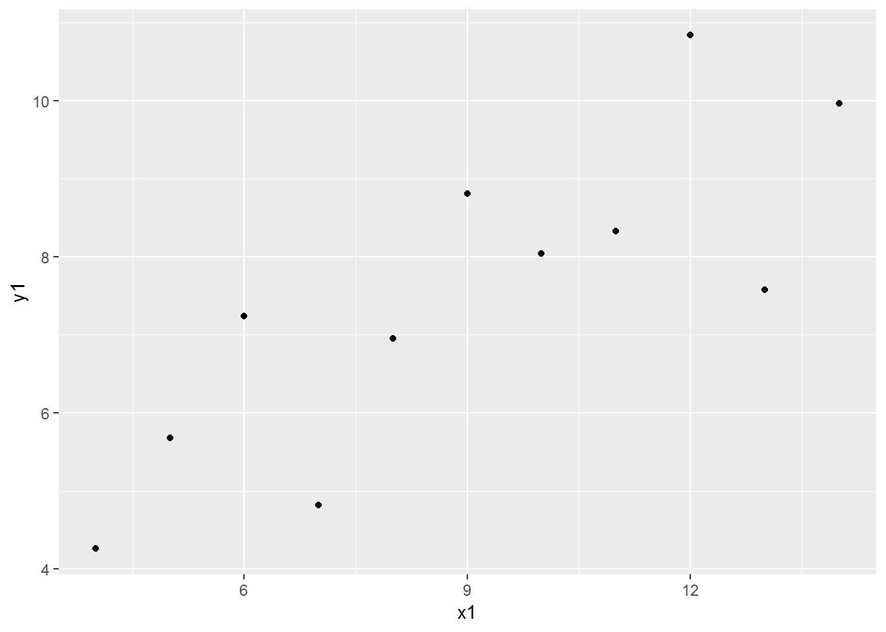
Now we’re getting somewhere! Let’s add a statistical layer.
ggplot (data=anscombe, aes(x=x1, y=y1)) +
geom_point() +
stat_smooth (method="lm", se=FALSE)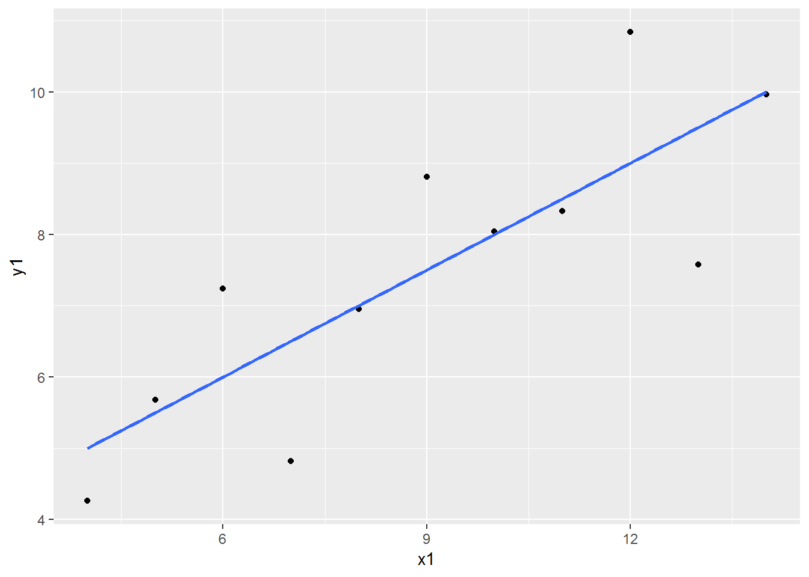
This looks like a proper chart! Still, your research methods teacher will probably shout at you if you don’t have the x and y axis start at zero . . .
ggplot (data=anscombe, aes(x=x1, y=y1)) +
geom_point() +
stat_smooth(method="lm", se=FALSE) +
expand_limits(x=0, y=0)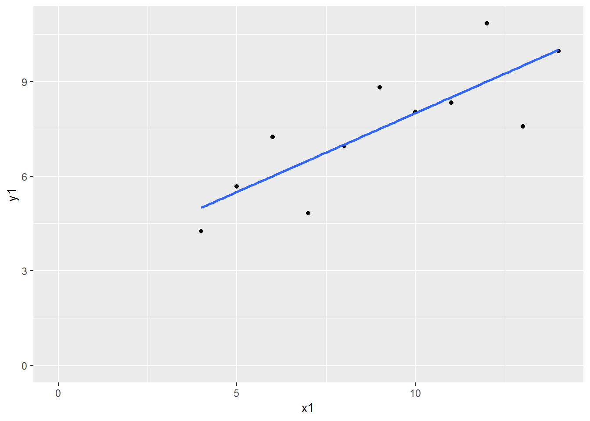
And she’ll also shout at you for not having the x and y axis share sensible scales
ggplot (data=anscombe, aes(x=x1, y=y1)) +
geom_point() +
stat_smooth(method="lm", se=FALSE) +
expand_limits(x=0, y=0) +
scale_x_continuous(breaks = seq(0, 20, 2)) +
scale_y_continuous(breaks = seq(0, 10, 2))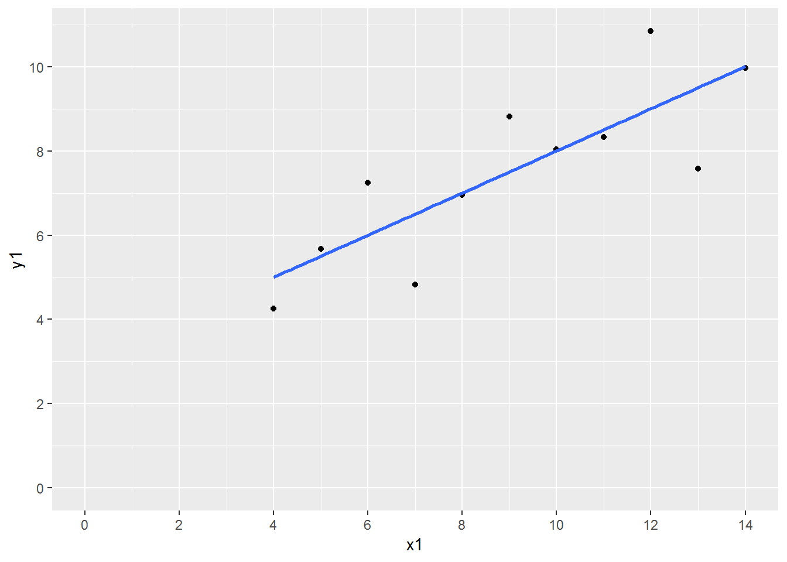
And why is the background grey? You know that’s a waste of ink if you print it out.
ggplot(data=anscombe, aes(x=x1, y=y1)) +
geom_point() +
stat_smooth(method="lm", se=FALSE) +
theme_bw() +
expand_limits(x=0, y=0) +
scale_x_continuous(breaks = seq(0, 20, 2)) +
scale_y_continuous(breaks = seq(0, 10, 2))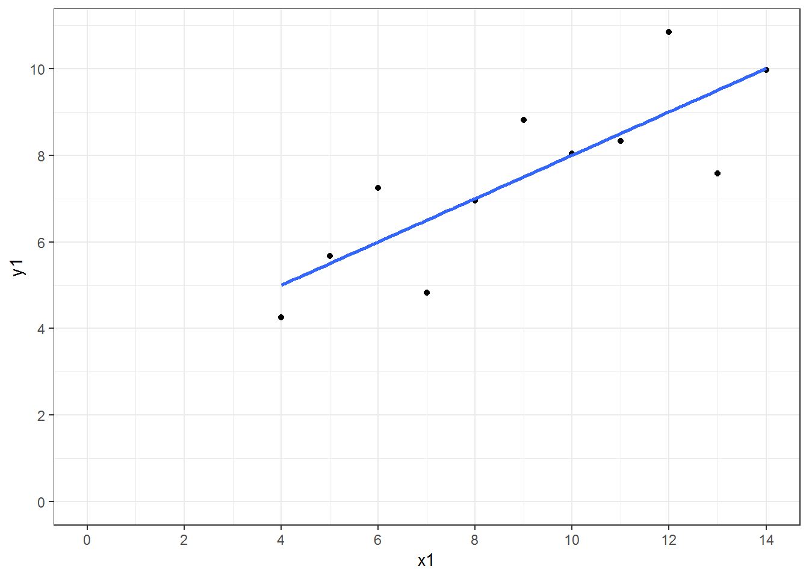
Maybe you need a title, and better axis labels too?
ggplot(data=anscombe, aes(x=x1, y=y1)) +
geom_point() +
stat_smooth(method="lm", se=FALSE) +
theme_bw() +
expand_limits(x=0, y=0) +
scale_x_continuous(breaks = seq(0, 20, 2)) +
scale_y_continuous(breaks = seq(0, 10, 2)) +
ggtitle("Anscombe Dataset 1") +
xlab("Variable X1") +
ylab("Variable Y1")
5.8.2 Building ggplots
Personally, I like to make my ggplots objects like so . . .
Anscombe1 <- ggplot(data=anscombe, aes(x=x1, y=y1)) +
geom_point() +
stat_smooth(method="lm", se=FALSE) +
theme_bw() +
expand_limits(x=0, y=0) +
scale_x_continuous(breaks = seq(0, 20, 2)) +
scale_y_continuous(breaks = seq(0, 10, 2)) +
ggtitle("Anscombe Dataset 1") +
xlab("Variable X1") +
ylab("Variable Y1")Then I can call them back much more easily if I want to look at them again
Anscombe1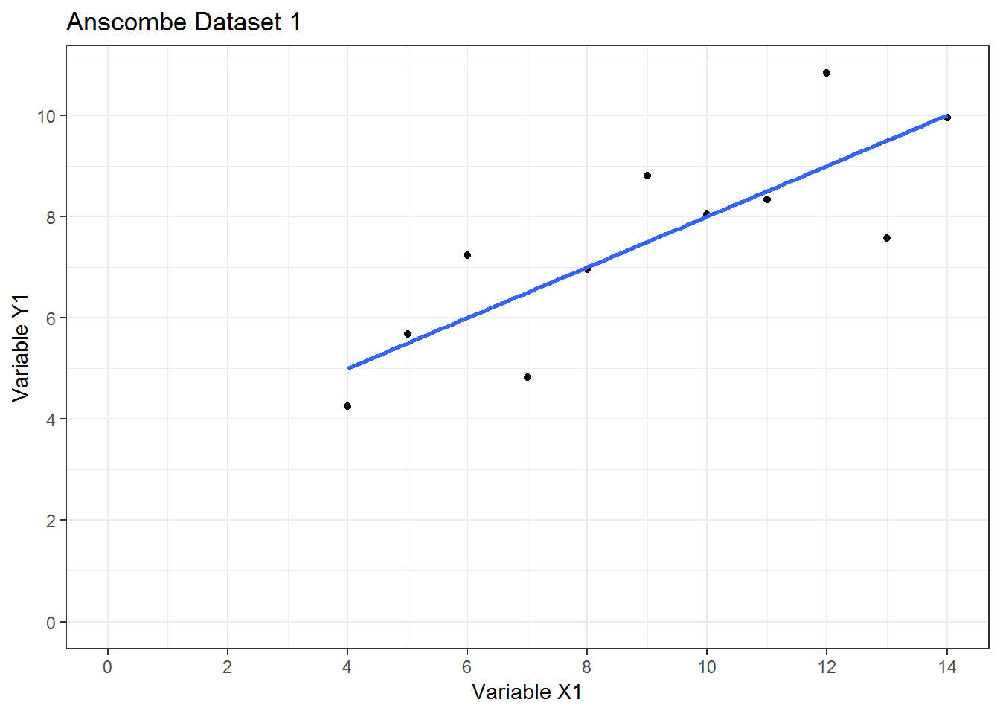
And now I can combine these into a grid by taking the first plot Anscombe1 and adding new column mappings e.g. aes(x=x2, y=y2) and labelling e.g. ggtitle("Anscombe Dataset 2").
Anscombe2 <- Anscombe1 +
aes(x=x2, y=y2) +
ggtitle("Anscombe Dataset 2") + xlab("Variable X2") + ylab("Variable Y2")
Anscombe3 <- Anscombe1 +
aes(x=x3, y=y3) +
ggtitle("Anscombe Dataset 3") + xlab("Variable X3") + ylab("Variable Y3")
Anscombe4 <- Anscombe1 +
aes(x=x4, y=y4) +
ggtitle("Anscombe Dataset 4") + xlab("Variable X4") + ylab("Variable Y4")
#And now let's put them all together!
grid.arrange(Anscombe1, Anscombe2, Anscombe3, Anscombe4, top="This is why you always visualise data first!")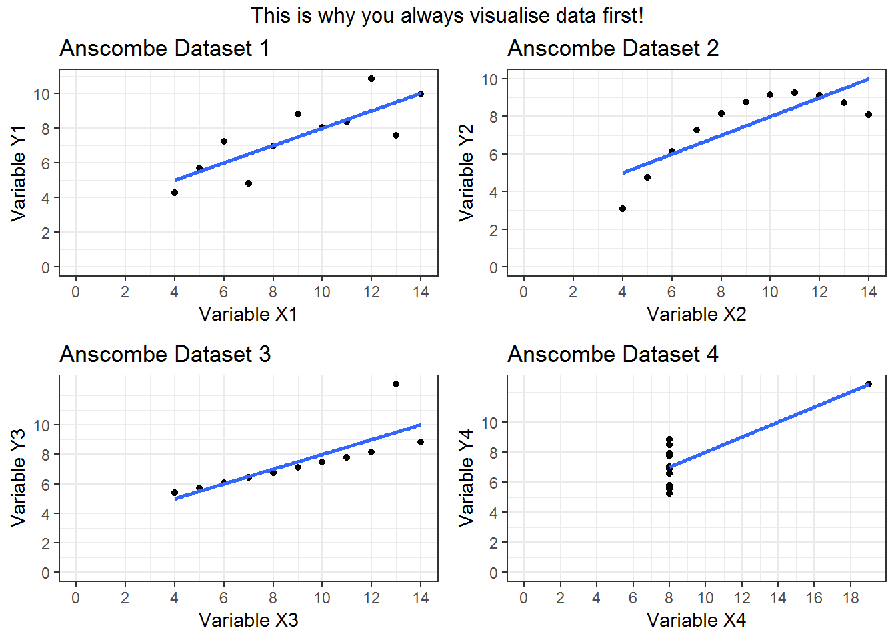
Lesson learned, eh?!
5.9 Where Do We Go From Here?
If you spend enough time on it, you can create truly beautiful visualisations in ggplot2. Play about with this code and see what you can do with it - share your best attempts!
I want to create a chart with all the sets overlaid, so I need all the x values in one column, all the y columns in another, and a new factor to tell me which set it belonged to. To change the shape of the data I’m going to use the tidyr and dplyr packages. (If you’re curious, I recommend googling these packages to find some tutorials on how to use them, they’re brilliant for data handling)
LongAnscombe <- anscombe %>%
mutate(observation=seq_len(n()))%>%
gather(key, value, -observation)%>%
separate(key, c("variable", "set") , 1 , convert=TRUE)%>%
mutate(set=factor(set))%>%
spread(variable, value)
LongAnscombe## observation set x y
## 1 1 1 10 8.04
## 2 1 2 10 9.14
## 3 1 3 10 7.46
## 4 1 4 8 6.58
## 5 2 1 8 6.95
## 6 2 2 8 8.14
## 7 2 3 8 6.77
## 8 2 4 8 5.76
## 9 3 1 13 7.58
## 10 3 2 13 8.74
## 11 3 3 13 12.74
## 12 3 4 8 7.71
## 13 4 1 9 8.81
## 14 4 2 9 8.77
## 15 4 3 9 7.11
## 16 4 4 8 8.84
## 17 5 1 11 8.33
## 18 5 2 11 9.26
## 19 5 3 11 7.81
## 20 5 4 8 8.47
## 21 6 1 14 9.96
## 22 6 2 14 8.10
## 23 6 3 14 8.84
## 24 6 4 8 7.04
## 25 7 1 6 7.24
## 26 7 2 6 6.13
## 27 7 3 6 6.08
## 28 7 4 8 5.25
## 29 8 1 4 4.26
## 30 8 2 4 3.10
## 31 8 3 4 5.39
## 32 8 4 19 12.50
## 33 9 1 12 10.84
## 34 9 2 12 9.13
## 35 9 3 12 8.15
## 36 9 4 8 5.56
## 37 10 1 7 4.82
## 38 10 2 7 7.26
## 39 10 3 7 6.42
## 40 10 4 8 7.91
## 41 11 1 5 5.68
## 42 11 2 5 4.74
## 43 11 3 5 5.73
## 44 11 4 8 6.89Now I want to plot it!
(I quite like this colour cheatsheet for the scale_colour_manual function)
AnscombeQuartet <- ggplot (data=LongAnscombe,
aes (x=x, y=y, color=set, shape=set)) +
geom_point() +
scale_colour_manual(name = "Quartet Set",
labels = c("One", "Two", "Three", "Four"),
values=c("steelblue4", "springgreen4", "slateblue4", "violetred4")) +
scale_shape_manual(name = "Quartet Set",
labels=c("One", "Two", "Three", "Four"),
values=c(16, 17, 18, 15)) +
stat_smooth(method = "lm", se = FALSE, lwd = 0.5) +
theme_bw() +
expand_limits (x=0, y=0) +
ggtitle ("The Anscombe Quartet") +
xlab ("The X Variable") +
ylab ("The Y Variable") +
facet_grid(. ~ set)
AnscombeQuartet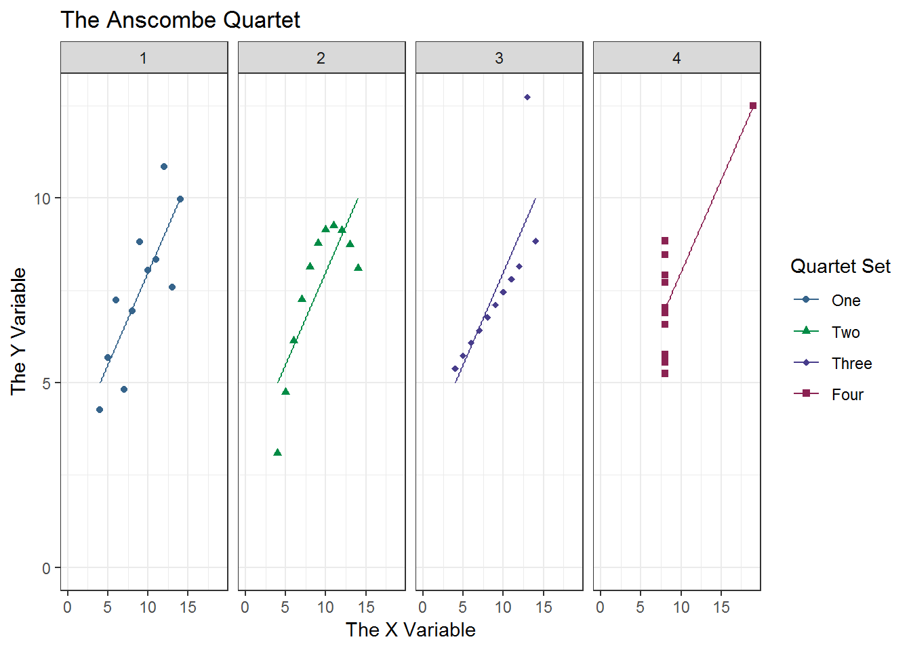
Start messing about with this bit of ggplot code to produce your prettiest examples of the Anscombe Quartet. If you feel like you’ve spent enough time visualising them, here’s what I suggest you do next…
install.packages("datasauRus")
And then you can do this . . .
ggplot(datasaurus_dozen, aes(x=x, y=y, colour=dataset))+
geom_point()+
theme_void()+
theme(legend.position = "none")+
facet_wrap(~dataset, ncol=3)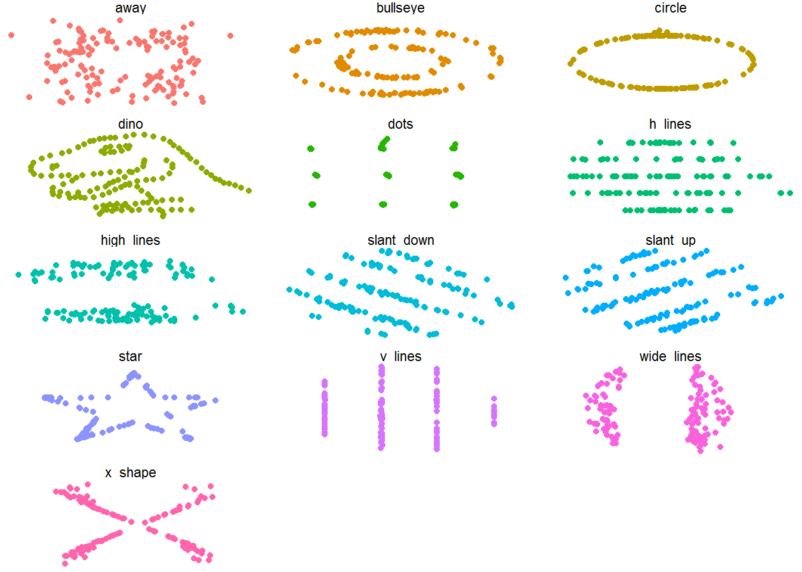
And check out these:
stat.desc(datasaurus_dozen_wide, basic=FALSE, norm=FALSE)## away_x away_y bullseye_x bullseye_y circle_x circle_y
## median 53.340 47.535 53.842 47.383 54.023 51.025
## mean 54.266 47.835 54.269 47.831 54.267 47.838
## SE.mean 1.407 2.261 1.407 2.260 1.406 2.260
## CI.mean.0.95 2.782 4.469 2.782 4.469 2.780 4.468
## var 281.227 725.750 281.207 725.533 280.898 725.227
## std.dev 16.770 26.940 16.769 26.936 16.760 26.930
## coef.var 0.309 0.563 0.309 0.563 0.309 0.563
## dino_x dino_y dots_x dots_y h_lines_x h_lines_y
## median 53.333 46.026 50.977 51.299 53.070 50.474
## mean 54.263 47.832 54.260 47.840 54.261 47.830
## SE.mean 1.407 2.260 1.407 2.260 1.407 2.261
## CI.mean.0.95 2.781 4.469 2.782 4.468 2.781 4.469
## var 281.070 725.516 281.157 725.235 281.095 725.757
## std.dev 16.765 26.935 16.768 26.930 16.766 26.940
## coef.var 0.309 0.563 0.309 0.563 0.309 0.563
## high_lines_x high_lines_y slant_down_x slant_down_y
## median 54.169 32.499 53.135 46.401
## mean 54.269 47.835 54.268 47.836
## SE.mean 1.407 2.261 1.407 2.260
## CI.mean.0.95 2.782 4.469 2.782 4.469
## var 281.122 725.763 281.124 725.554
## std.dev 16.767 26.940 16.767 26.936
## coef.var 0.309 0.563 0.309 0.563
## slant_up_x slant_up_y star_x star_y v_lines_x v_lines_y
## median 54.261 45.292 56.535 50.111 50.363 47.114
## mean 54.266 47.831 54.267 47.840 54.270 47.837
## SE.mean 1.407 2.261 1.407 2.260 1.407 2.261
## CI.mean.0.95 2.782 4.469 2.782 4.468 2.782 4.469
## var 281.194 725.689 281.198 725.240 281.232 725.639
## std.dev 16.769 26.939 16.769 26.930 16.770 26.938
## coef.var 0.309 0.563 0.309 0.563 0.309 0.563
## wide_lines_x wide_lines_y x_shape_x x_shape_y
## median 64.550 46.279 47.136 39.876
## mean 54.267 47.832 54.260 47.840
## SE.mean 1.407 2.261 1.407 2.260
## CI.mean.0.95 2.782 4.469 2.782 4.468
## var 281.233 725.651 281.231 725.225
## std.dev 16.770 26.938 16.770 26.930
## coef.var 0.309 0.563 0.309 0.563Got the message yet? ;)
5.10 Intro to ANOVAs
5.11 About This Resource
Exercise Type: Theory Theory exercises teach the underpinning concepts for statistics or R that you need to know
Exercise Suitability: Beginner
If you have R Studio installed on your machine and you know what an object is, you can work through this material.
This is an R translation of a lecture I do explaining the principles behind ANOVAs (or analyses of variances). The teaching material is very much taken from Grafen & Hails’ Modern Statistics for the Life Sciences which I love and still reference when I’m trying to think in detail about how statistics work.
The point of providing this as a full page is to give the R code alongside the materials. You should feel free to copy and paste the R code directly into your console. I think this works best if you work alongside the material. Stop to look at your data regularly with view(data), and read the notes within the code chunks about how and why the code has been used.
5.12 Learning Outcomes
By the end of this sheet you should be able to . . .
- Describe the principles of how an ANOVA works
- Run an ANOVA in R
- Interpret the results of an ANOVA
5.13 The R Environment
Here are the packages you’ll need for this exercise. (Remember, if you don’t have one of these packages you can install it with the command: install.packages("packagename") )
library(tidyverse)## -- Attaching packages ------- tidyverse 1.2.1 --## v tibble 1.4.2 v purrr 0.2.5
## v readr 1.1.1 v stringr 1.3.1
## v tibble 1.4.2 v forcats 0.3.0## -- Conflicts ---------- tidyverse_conflicts() --
## x dplyr::combine() masks gridExtra::combine()
## x tidyr::extract() masks pastecs::extract()
## x dplyr::filter() masks stats::filter()
## x dplyr::first() masks pastecs::first()
## x dplyr::lag() masks stats::lag()
## x dplyr::last() masks pastecs::last()library(RColorBrewer)
library (knitr)5.14 Analysis of Variance
ANOVAs fall under the GLM formula. People sometimes speak about ANOVAs as if they’re a different test, but Grafen & Hails argue they’re a good introduction to the linear model formula because you have to think about variance in frequentist statistics. I’m inclinded to agree.
5.14.1 Fake Experiment
We’re going to start with a fake experiment to explore this. As you may know, the national animal of Scotland is the unicorn. Scotland has started farming unicorns (n a very welfare friendly manner) to export more magic dust. Unicorns shed magic dust from their horns every morning, and this is gathered by the farmer.
There’s a belief that unicorns shed more dust when they hear music, and so we set up a trial with three farms:
- Farm 1 was our negative control farm, with no intervention.
- Farm 2 was our trial farm, where a radio station tuned to music was played over the speakers.
- Farm 3 was a positive control farm, and played radio tuned to BBC Radio 4 for thoughtful discussion.
We recorded the raw weekly dust yield of 10 unicorns on each farm, and the data looks like this:
Radio <- tibble (NoRadio = c(150, 130, 121, 90, 98, 100, 98, 100, 113, 111),
RadioMusic = c(112, 127, 132, 150, 112, 128, 110, 120, 98, 107),
RadioDiscussion = c(75, 98, 88, 83, 83, 77, 75, 84, 93, 99))
# Remember you can view this data in R Studio with `View(Radio)`We could look at the data directly, but let’s ask R to make it look a little prettier:
kable (Radio,
col.names = c("No Radio", "Radio Playing Music", "Radio Playing Discussion"),
caption = "Raw weekly dust yield (kg) from three unicorn farms")| No Radio | Radio Playing Music | Radio Playing Discussion |
|---|---|---|
| 150 | 112 | 75 |
| 130 | 127 | 98 |
| 121 | 132 | 88 |
| 90 | 150 | 83 |
| 98 | 112 | 83 |
| 100 | 128 | 77 |
| 98 | 110 | 75 |
| 100 | 120 | 84 |
| 113 | 98 | 93 |
| 111 | 107 | 99 |
We always want to know Does x affect y?.
In this case, we’re asking: Does radio as a background noise affect the magic dust yield of unicorns?
5.14.2 Tidy Data Is Important!
I wanted to write the data in that way because it’s quite a logical way to think about it - for a human. R prefers data to be tidy.
Luckily we can tidy this data extremely easy.
RadioTidy <- Radio %>%
gather(key = "Radio", value = "DustYield")
# Remember to `View(RadioMelt)` to see what this code has done!5.14.3 Let’s Visualise The Data
Visualising data is always a good stop - but note that in this exercise I’m going to ask you to visualise the data more often than you would in practice. This is because I want to demonstrate different aspects of variance.
Learning how to do these visualisations is just an extra benefit you get ;)
ggplot (RadioTidy, aes (x = Radio, y = DustYield)) +
geom_point(aes(shape = Radio, colour = Radio)) +
labs (title = "Magic Dust Yield(kg) by Unicorn Farm",
y = "Dust Yield (Kg)", x = "Radio Condition") +
scale_y_continuous(limits = c(0, 200)) +
theme_classic ()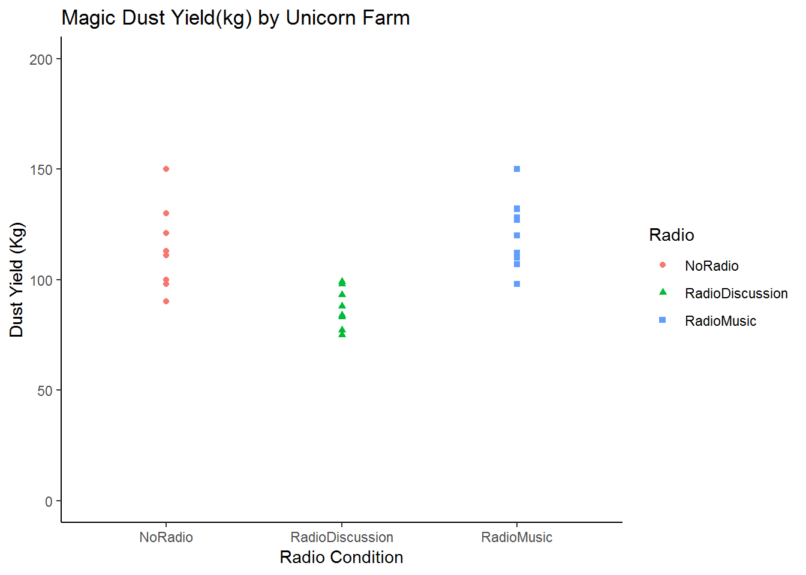
In this chart we have plotted the mean yield of every single unicorn by farm. We still want to know whether radio affects yield, but we know that some unicorns are probably high dust yielders, and others might be low yielding unicorns. In other words, we know that individuals vary, and so we want to know what happens to the group on average.
But we can also see here that the groups seem to be different. The amount of variation isn’t the same between the groups. In fact, the farm ‘Radio Discussion’ is more closely clustered together than the others.
5.14.4 Partitioning Variation
Let’s think a little bit more about what we mean by this question: does x affect y?
We want to know what proportion of the variation we observe in y can be explained by x.
# Let's have some new data
examples <- tibble (x.perfect = c(1,2,3,4,5,6,7,8,9,10),
y.perfect = c(1,2,3,4,5,6,7,8,9,10),
x.realistic = c(1,2,3,4,4,6,8,8,9,11),
y.realistic = c(2, 2, 4, 5, 5, 5, 7, 8, 9, 9))
ggplot (data = examples, aes(x.perfect, y.perfect))+
geom_point () +
scale_y_continuous(limits =c(0,10)) +
scale_x_continuous(limits = c(0,10)) +
labs (title = "100% of the variation in y is explained by x") +
theme_classic()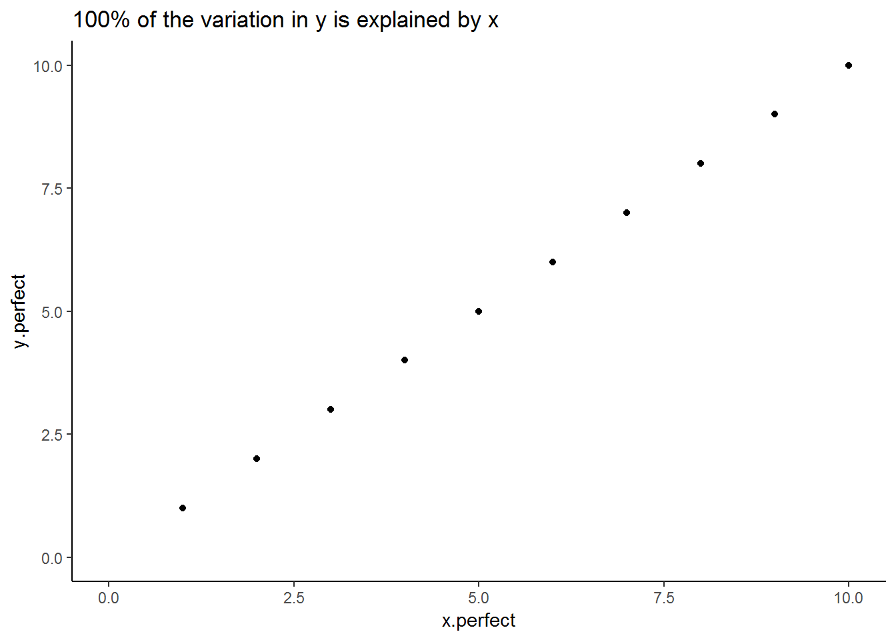
In a ‘perfect’ dataset, we see that for every step x increases, y increases by the same. There’s a 1:1 relationship between the two.
Of course, we very rarely ever see this in the real world.
How does it look with (slightly) more realistic data?
ggplot (data = examples, aes(x.realistic, y.realistic))+
geom_point () +
scale_y_continuous(limits =c(0,10)) +
scale_x_continuous(limits = c(0,10)) +
labs (title = "How much of the variation in y is explained by x?") +
theme_classic()## Warning: Removed 1 rows containing missing values (geom_point).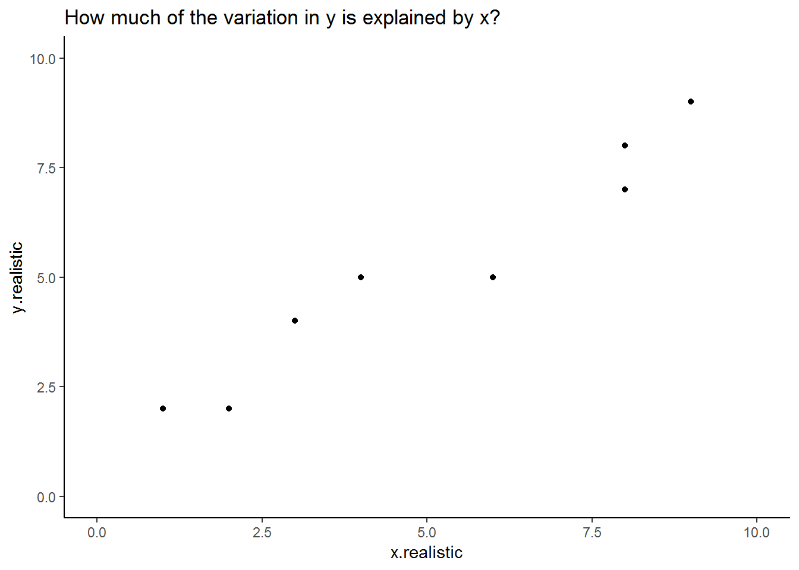
Most of us looking at this chart would be able to draw a ‘line of best fit’ describing the relationship between x and y in this example. With a linear model we can calculate this exactly. (This is the exact same equation as you would have learned at school y = mx + c, or predicted y = gradient * (a value of x) + y intercept)
Let’s ask R to fit a linear model for this data:
lm(data = examples, y.realistic ~ x.realistic)##
## Call:
## lm(formula = y.realistic ~ x.realistic, data = examples)
##
## Coefficients:
## (Intercept) x.realistic
## 1.3659 0.7561The lm call stands for ‘linear model’ and is part of R’s basic stats code.
The output here starts with the Call which reiterates what we specificed in our lm command. Then it gives us:
- Coefficient of the intercept (where our model line crosses the y axis)
- Coefficient of x.realistic
Since x.realistic is a continuous variable, the x.realistic coeffcient represents the difference in the predicted value of Y for each one-unit difference in x.realistic.
If that’s confusing, let’s run this on the perfect data:
lm(data = examples, y.perfect ~ x.perfect)##
## Call:
## lm(formula = y.perfect ~ x.perfect, data = examples)
##
## Coefficients:
## (Intercept) x.perfect
## 1.123e-15 1.000e+00The coefficient for x.perfect is 1 - because for every 1 step increase in the value of x, our value of y increases by 1.
But what about significance? Which we all know is the thing you’re really looking for here. We can find that out by asking R to summarise the model:
summary(lm(data = examples, y.realistic ~ x.realistic))##
## Call:
## lm(formula = y.realistic ~ x.realistic, data = examples)
##
## Residuals:
## Min 1Q Median 3Q Max
## -0.9024 -0.6159 0.1220 0.6037 0.8293
##
## Coefficients:
## Estimate Std. Error t value Pr(>|t|)
## (Intercept) 1.36585 0.46584 2.932 0.0189 *
## x.realistic 0.75610 0.07258 10.418 6.25e-06 ***
## ---
## Signif. codes: 0 '***' 0.001 '**' 0.01 '*' 0.05 '.' 0.1 ' ' 1
##
## Residual standard error: 0.7199 on 8 degrees of freedom
## Multiple R-squared: 0.9314, Adjusted R-squared: 0.9228
## F-statistic: 108.5 on 1 and 8 DF, p-value: 6.247e-06This time we get more information. The coefficients are still listed in the table, alongside their standard error, a T Value and a P value (and look at how significant it is - job done, right?)
At the top we have residuals which we’ll come to another day, and at the bottom we have an F statistic and a P Value (these are the ones I’d pay attention to if I were you) and an Adjusted R-squared. At the moment this tell us that 92% of the variation in y.realistic can be explained by x.realistic.
And if we wanted, we could add this to our plot from earlier with the addition of a single line of code:
ggplot (data = examples, aes(x.realistic, y.realistic))+
geom_point () +
scale_y_continuous(limits =c(0,10)) +
scale_x_continuous(limits = c(0,10)) +
labs (title = "How much of the variation in y is explained by x?") +
theme_classic() + # And add a single line below:
geom_smooth (method = 'lm') ## Warning: Removed 1 rows containing non-finite values (stat_smooth).## Warning: Removed 1 rows containing missing values (geom_point).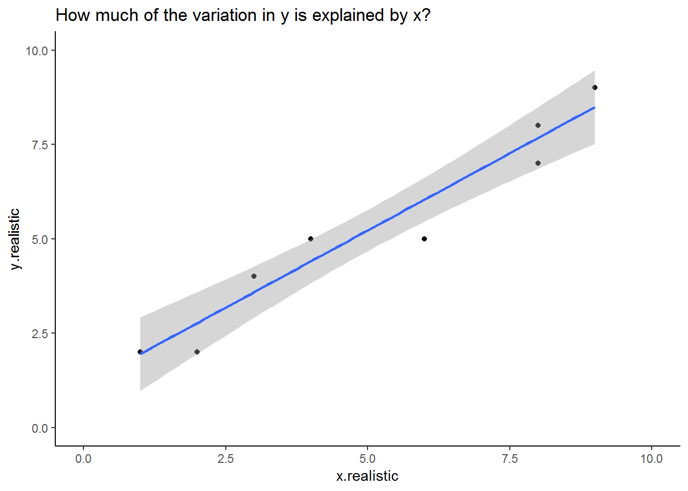
This is easy to do for two continuous variables, but in our unicorn farm example our explanatory variable is categorical. How do we decide how much of a difference in our response (dust yield) can be attributed to the radio condition?
5.15 Calculating Variance
The variability of data is how much the data is scattered around the mean. An ANOVA is simply asking: Is the mean of each group a better predictor than the mean of all the data?.
Let’s start by looking at only one farm:
Radio %>%
mutate(UnicornNo = c(1,2,3,4,5,6,7,8,9,10)) %>%
# The mutate function adds a new variable just to plot this one specific chart
# And then we pipe it directly into ggplot, so we're not changing the Radio data
# Remember you can check this with `View(Radio)`, you'll see 'UnicornNo' doesn't exist.
ggplot (aes (x = UnicornNo, y = NoRadio)) +
geom_point() +
labs (title = "Magic Dust Yield(kg) for Farm 1", y = "Dust Yield (Kg)") +
scale_y_continuous(limits = c(0, 200)) +
scale_x_continuous(breaks = c(0, 2, 4, 6, 8, 10)) +
# Edit the above line out to see what happens to the x axis
theme_classic ()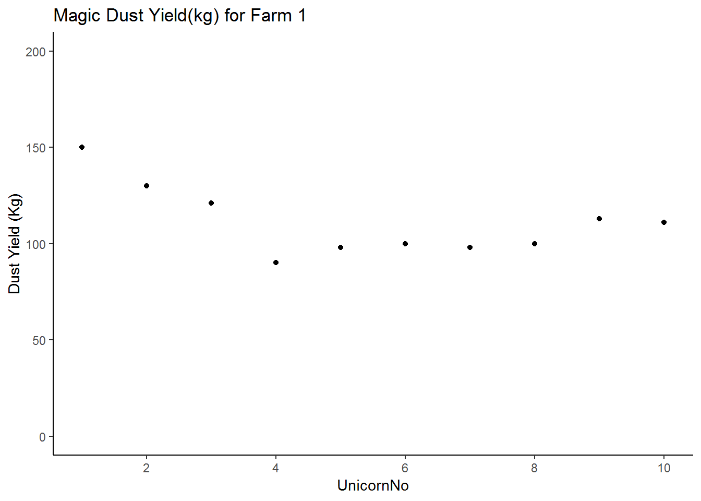
Deviations from the mean will be both positive and negative, and the sum of these deviations will always be zero. First, let’s find out the mean dust yield of the farm without any radio …
RadioTidy %>%
group_by(Radio) %>%
filter(Radio == "NoRadio") %>%
summarise(mean = mean(DustYield))## # A tibble: 1 x 2
## Radio mean
## <chr> <dbl>
## 1 NoRadio 111.# This looks like a super complicated way to calculate a mean - why do it like this?
# Well, first by piping the data we don't actually save any changes
# We just get to see the result we're interested in.
# Delete the 'filter' line and see what that looks like. We could plot this on our chart:
Radio %>%
mutate(count = c(1,2,3,4,5,6,7,8,9,10)) %>%
ggplot (aes (x = count, y = NoRadio)) +
geom_point() +
labs (title = "Magic Dust Yield(kg) for Farm 1", y = "Dust Yield (Kg)") +
scale_y_continuous(limits = c(0, 200)) +
theme_classic () +
# This new line basically draws a line on our chart based on the mean we just calculated
geom_hline(yintercept = 111.1) 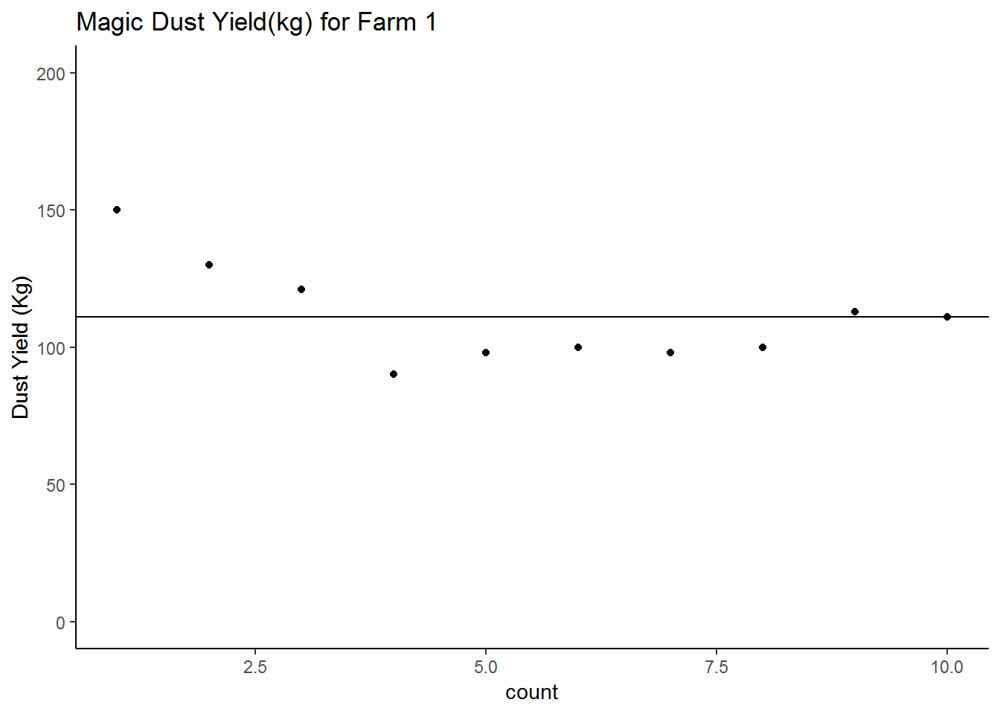
5.15.1 Deviation from the group mean
We want to know what the deviation from the mean of the group is for each individual. We can ask R to calculate this for us using the handy mutate function:
Radio %>%
mutate (NoRadioDeviation = (mean(NoRadio) - NoRadio)) ## # A tibble: 10 x 4
## NoRadio RadioMusic RadioDiscussion NoRadioDeviation
## <dbl> <dbl> <dbl> <dbl>
## 1 150 112 75 -38.9
## 2 130 127 98 -18.9
## 3 121 132 88 -9.9
## 4 90 150 83 21.1
## 5 98 112 83 13.1
## 6 100 128 77 11.1
## 7 98 110 75 13.1
## 8 100 120 84 11.1
## 9 113 98 93 -1.9
## 10 111 107 99 0.1000# I'm using Radio here instead of RadioTidy because I'm being a bit lazyAnd if you don’t believe me, you can run those calculations yourself:
111.1-150## [1] -38.9See? Not convinced yet … ?
111.1-130## [1] -18.9111.1-121## [1] -9.9111.1-90## [1] 21.1111.1-98## [1] 13.1111.1 - 100## [1] 11.1# And so onYou can check that the sum of NoRadioDeviation does add to zero (or at least very close to it given some rounding errors):
Radio %>%
mutate (NoRadioDeviation = (mean(NoRadio) - NoRadio)) %>%
summarise ("Sum of Deviations from No Radio Mean" = sum(NoRadioDeviation))## # A tibble: 1 x 1
## `Sum of Deviations from No Radio Mean`
## <dbl>
## 1 -0.0000000000000568No matter what your dataset looks like, no matter what numbers are in there, this will always be true.
5.15.2 Calculating variance from deviations
Because the deviations will always sum to 0, the raw deviations are not very useful.
So how can we compare the deviation (variance) between two datasets?
If we square the deviations and then sum them we have a more useful measure of variance that we call Sums of Squares (SS)
Radio %>%
mutate (NoRadioDeviation = (mean(NoRadio) - NoRadio),
SquaredNoRadioDeviation = (NoRadioDeviation*NoRadioDeviation))## # A tibble: 10 x 5
## NoRadio RadioMusic RadioDiscussion NoRadioDeviation SquaredNoRadioDevi~
## <dbl> <dbl> <dbl> <dbl> <dbl>
## 1 150 112 75 -38.9 1513.
## 2 130 127 98 -18.9 357.
## 3 121 132 88 -9.9 98.0
## 4 90 150 83 21.1 445.
## 5 98 112 83 13.1 172.
## 6 100 128 77 11.1 123.
## 7 98 110 75 13.1 172.
## 8 100 120 84 11.1 123.
## 9 113 98 93 -1.9 3.61
## 10 111 107 99 0.1000 0.01000Sums of Squares are useful because they don’t sum to 0, but they’re still influenced by the number of data points we have (e.g. if we had one more unicorn in the No Radio farm the sum of squares would have to increase).
So we calculate the variance of the dataset by:
Variance = Sums of Squares / (n - 1)
Variance is therefore a measure of the variability of a dataset that takes the size of the dataset into account. And we can use variance to compare variability across different datasets. It’s very useful!
R, of course, has a very handy function to calculate variance automatically, var:
Radio %>%
summarise("Variance No Radio" = var(NoRadio))## # A tibble: 1 x 1
## `Variance No Radio`
## <dbl>
## 1 334.But if you’re not convinced …
Radio %>%
mutate (NoRadioDeviation = (mean(NoRadio) - NoRadio),
SquaredNoRadioDeviation = (NoRadioDeviation*NoRadioDeviation)) %>%
summarise(SumSquaresNoRadio = sum(SquaredNoRadioDeviation))## # A tibble: 1 x 1
## SumSquaresNoRadio
## <dbl>
## 1 3007.And then divide that by n-1:
3006.9/9## [1] 334.15.16 Partitioning Variation
Remember, in this experiment we can see that there is variation around dust yields. What we want to know is:
- How much of this variation is due to our explanatory variable (what kind of radio they listened to)
- How does x affect y?
5.16.1 Imaginary Scenario 1
Let’s imagine a scenario where the condition (our categorical variable) explains almost all of the variance in the dataset.
It would look like this:
Sce1<-tibble (Condition1 = c(99,100,101,99,100,101,99,101,100,101),
Condition2 = c(120,121,122,120,121,122,120,123,121,120),
Condition3 = c(83,84,85,85,84,83,83,84,85,86)) %>%
gather (key = Condition, value = DustYield) %>%
mutate (Count = c(1:30))
# In the code above I've gathered the data into a tidy format
ImaginaryScenario1 <- Sce1 %>%
ggplot (aes (x = Count, y = DustYield)) +
geom_point(aes(shape = Condition, colour = Condition)) +
labs (title = "Magic Dust Yield(kg) for Farm 1", y = "Dust Yield (Kg)", x = "Unicorn ID Number") +
scale_y_continuous(limits = c(0, 200)) +
theme_classic ()
# I have also made this chart an object because we're going to update it
# It's quicker to do this as an object
# You can compare how we update this chart with how we update the ones above.
ImaginaryScenario1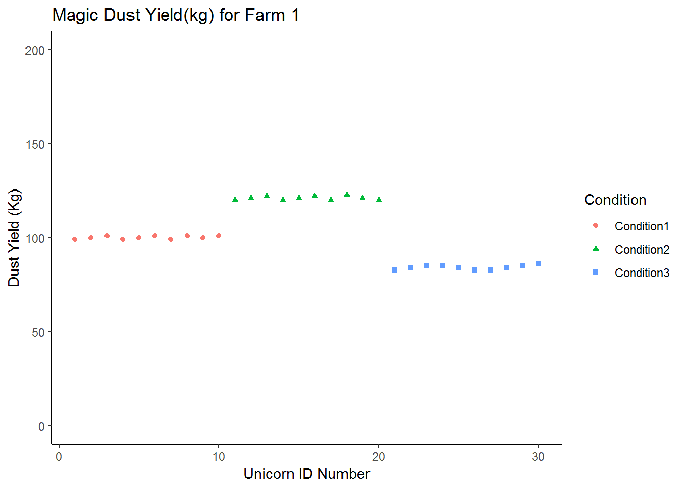
We could fit the mean of the dataset on this:
ImaginaryScenario1 +
geom_hline(yintercept = mean(Sce1$DustYield))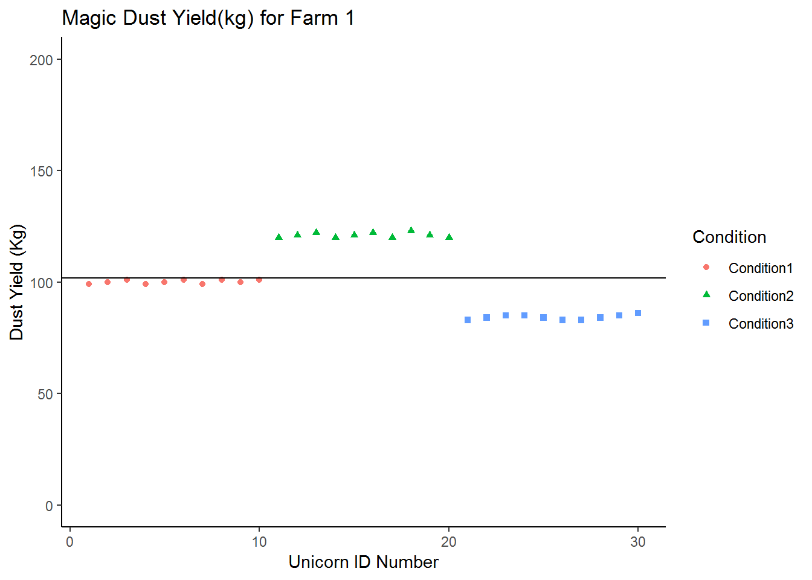
Let’s compare the overall mean with the group means, and see which one is the best guess for any given data point. Remember - if the condition is explaining a lot of the variation around our response, we’ll see less deviation from each group mean than the overall mean.
Sce1 %>%
group_by(Condition) %>%
summarise(mean = mean (DustYield))## # A tibble: 3 x 2
## Condition mean
## <chr> <dbl>
## 1 Condition1 100.
## 2 Condition2 121
## 3 Condition3 84.2ImaginaryScenario1 +
geom_hline(yintercept = mean(Sce1$DustYield)) +
geom_segment(aes(x =1, y = 100.1, xend =10, yend = 100.1, color = "red")) +
geom_segment(aes(x = 11, y = 121.0, xend = 20, yend = 121.0, color = "green")) +
geom_segment (aes(x = 21, y = 84.2, xend = 30, yend = 84.2, color = "blue")) +
theme (legend.position = "none")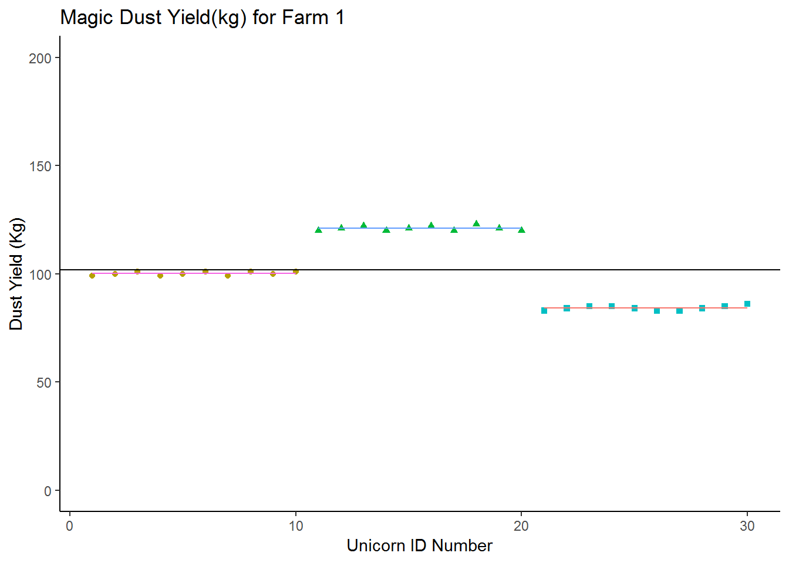
In this case, the individual group means are a better description of the group than the overall population mean. Any statistics we were to apply would simply put a number to what we see on this chart.
So let’s look at a second scenario:
Sce2<-tibble (Condition1 = c(84,86,123,95,87,110,99,95,121,121),
Condition2 = c(83,115,85,85, 110,105,84,115,101,100),
Condition3 = c(84,122,80,80,101,83,83,99, 120,120)) %>%
gather (key = Condition, value = DustYield) %>%
mutate (Count = c(1:30))
Sce2 %>%
group_by(Condition) %>%
summarise(mean = mean (DustYield))## # A tibble: 3 x 2
## Condition mean
## <chr> <dbl>
## 1 Condition1 102.
## 2 Condition2 98.3
## 3 Condition3 97.2Now we chart it, and add our segment lines for each group’s mean:
Sce2 %>%
ggplot (aes (x = Count, y = DustYield)) +
geom_point(aes(shape = Condition, colour = Condition)) +
labs (title = "Magic Dust Yield(kg) for Farm 1", y = "Dust Yield (Kg)", x = "Unicorn ID Number") +
scale_y_continuous(limits = c(0, 200)) +
theme_classic () +
geom_hline(yintercept = mean(Sce2$DustYield)) +
geom_segment(aes(x =1, y = 102.1, xend =10, yend = 102.1, color = "red")) +
geom_segment(aes(x = 11, y = 98.3, xend = 20, yend = 98.3, color = "green")) +
geom_segment (aes(x = 21, y = 97.2, xend = 30, yend = 97.2, color = "blue")) +
theme (legend.position = "none")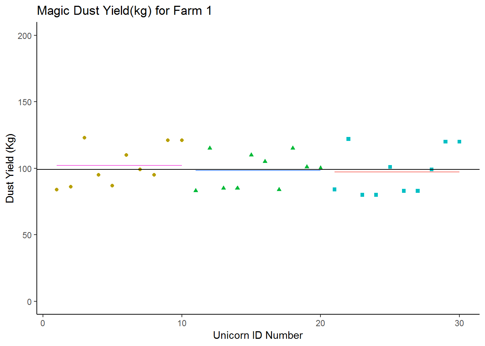
In this second scenaro, the population mean is not very different from the means of each of the three conditions. In fact, it’s hard to see some of those means on the chart! We haven’t successfully partitioned off any of the dataset’s varaiance by looking at each of the condition means.
In this second scenario, the explanatory variable is not explaining very much of the response variable at all.
5.17 Our Scenario
If we plot our unicorn data in the same format:
kable (Radio,
col.names = c("No Radio", "Radio Playing Music", "Radio Playing Discussion"),
caption = "Raw weekly dust yield (kg) from three unicorn farms")| No Radio | Radio Playing Music | Radio Playing Discussion |
|---|---|---|
| 150 | 112 | 75 |
| 130 | 127 | 98 |
| 121 | 132 | 88 |
| 90 | 150 | 83 |
| 98 | 112 | 83 |
| 100 | 128 | 77 |
| 98 | 110 | 75 |
| 100 | 120 | 84 |
| 113 | 98 | 93 |
| 111 | 107 | 99 |
RadioTidy %>%
mutate(count = c(1:30)) %>%
ggplot (aes (x = count, y = DustYield)) +
geom_point(aes(shape = Radio, colour = Radio)) +
labs (title = "Magic Dust Yield(kg)", y = "Dust Yield (Kg)", x = "Unicorn ID Number") +
scale_y_continuous(limits = c(0, 200)) +
theme_classic ()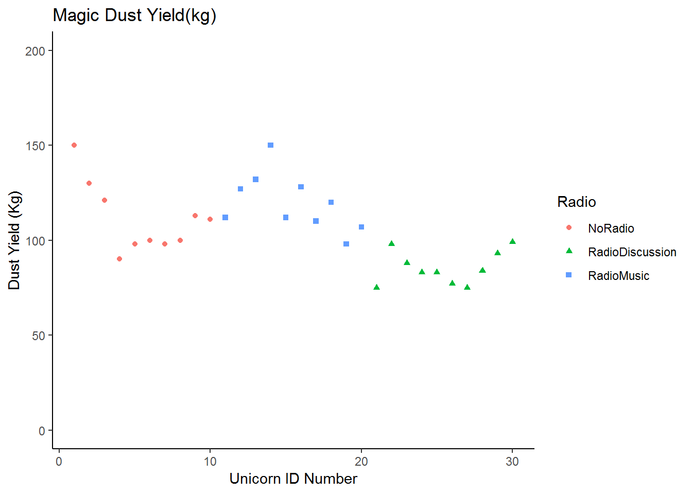
5.17.1 A word on significance
We’re beginning to get closer to the real definition of significance.
Significance: Is the variability explained by our model greater than we would expect by chance alone.
And this is what variance can answer.
5.17.2 Going Back to Sums of Squares
In our two imaginary scenarios above we were (roughly) partitioning variances by drawing lines on our charts - much like we could draw a line of best fit on the perfect data chart earlier.
When we run a model, we want to describe that chart mathematically.
When we calculated variance earlier, we calculated the variance in the condition mean mean (e.g. the variance for No Radio data). We can call this the Error Sum of Squares (SSE) which is the sum of the squares of the deviations of the data around the means of each group.
We could also calculate …
- Total Sums of Squares (SSY), the sums of squares of the deviations of the data around the population mean.
- Condition Sums of Squares (SSF), the sums of squares of the deviations of each condition mean from the population mean.
But why would we use any sums of squares when we already establishd that variance was a better measure?
Let’s rearrange our data so we have for each ‘row’ the condition mean and total mean. We’re going to call this dataset MFY for short because:
- M is the global mean
- F is the condition mean
- Y is the ‘response variable’
MFY <- RadioTidy %>%
mutate ("Y" = DustYield) %>%
mutate ("M" = mean(Y)) %>%
# If we now ask R to group the data, it will calculate the mean per group:
group_by(Radio) %>%
mutate ("F" = mean(Y)) %>%
# Remember to ungroup after!
ungroup()
# I suggest you `view(MFY)`We can also calculate:
- MY (The data - Dataset mean)
- MF (The condition mean - dataset mean)
- FY (The data - condition mean)
MFY <- MFY %>%
mutate (MY = (Y-M),
MF = (F-M),
FY = (Y - F))We’ve calculated a lot of deviations here - but we said we always wanted to square those deviations, so:
MFY <- MFY %>%
mutate (MY2 = (MY*MY),
MF2 = (MF*MF),
FY2 = (FY*FY))MY2, MF2 & FY2 are the squares of the deviations, but we need a sum of squares for each one.
MFY %>%
summarise(SumSquareMY = sum(MY2),
SumSquareMF = sum(MF2),
SumSquareFY = sum(FY2))## # A tibble: 1 x 3
## SumSquareMY SumSquareMF SumSquareFY
## <dbl> <dbl> <dbl>
## 1 12053. 6301. 5752.But we also have one more bit of information we need to consider - what we call degrees of freedom. Let’s say we want to put those sum squares into a nice table. We could also add in a row talking about the degrees of freedom.
There are degrees of freedom for:
- M - which is 1. There is only 1 bit of information in the whole group mean
- F - which is 3. There are only 3 means in the conditions.
- Y - which is 30. We have 30 data points to observe.
If you were to calculate the degrees of freedom (dof) for MY, MF and FY - you can run the same calculation:
- MY (Ydof - Mdof = 30 - 1 = 29)
- MF (Fdof - Mdof = 3 - 1 = 2)
- FY (Ydof - Fdof = 30 - 3 = 27)
We can calculate something called mean squares which is:
Mean Squares = Sum of Squares / Degrees of Freedom
So:
- MS-MY = (12053.2/ 29) = 415.6276
- MS-MF = (6301.4/2) = 3150.7
- MS-FY = (5751.8/27) = 213.0296
And this is pretty much all we can do with the data.
kable(MFY %>%
summarise(SumSquareMY = sum(MY2),
SumSquareMF = sum(MF2),
SumSquareFY = sum(FY2),
MeanSquareMY = sum(MY2)/29,
MeanSquareMF = sum(MF2)/2,
MeanSquareFY = sum(FY2)/27))| SumSquareMY | SumSquareMF | SumSquareFY | MeanSquareMY | MeanSquareMF | MeanSquareFY |
|---|---|---|---|---|---|
| 12053.2 | 6301.4 | 5751.8 | 415.6276 | 3150.7 | 213.0296 |
Earlier we said variance was important because it took into account the size of the dataset.
Mean Squares are very similar to the variance calculation, because they’re a measure of deviation in relation to the size of the dataset.
5.18 The Importance of Mean Squares
If the condition (radio) has no effect on the data, then the variation we would see between the farms would be similar to the variation we saw within any given farm. It would be like Scenario 2, where the mean of the farm was no more use to us than the mean of the overall population.
If that were the case: the Condition Mean Square (FMS) / Error Mean Square (EMS) = 1
Let’s look again at that last table.
kable(MFY %>%
summarise(SumSquareMY = sum(MY2),
SumSquareMF = sum(MF2),
SumSquareFY = sum(FY2),
MeanSquareMY = sum(MY2)/29,
MeanSquareMF = sum(MF2)/2,
MeanSquareFY = sum(FY2)/27))| SumSquareMY | SumSquareMF | SumSquareFY | MeanSquareMY | MeanSquareMF | MeanSquareFY |
|---|---|---|---|---|---|
| 12053.2 | 6301.4 | 5751.8 | 415.6276 | 3150.7 | 213.0296 |
And now we will take the Condition Mean Square and Error Mean Squares from that table:
- FMS = 3150.7
- ENS = 213.0296
And we’ll call this the F Ratio.
3150.7/213.0296## [1] 14.789965.19 F Ratios and F Distributions
Because the mean squares are standardised by the size of the dataset, we can mathematically calculate the range and likelihood of any F-Ratio. This is called the F Distribution.
You can look up F distributions for an alpha level of 0.05. Click here to go directly there. We are interested in the ratio between 2 and 27 degrees of freedom, which gives us a critical F ratio of 3.3541, which our F Ratio (14.79) is much bigger than.
In fact, if we were to plot a curve of the F Distribution between 2 and 27 degrees of freedom, less than 0.001% of the total area would be more than 14.79.
5.20 In Conclusion . . .
The probability of getting an F-Ratio as large as 14.8 (or larger), if the null hypothes (x has no effect on y) is true, is less than 0.001 Or: F (between 2 and 27 degrees of freedom) = 14.79, and P < 0.001 CONGRATULATIONS! You just ran an ANOVA completely by hand. # Prove It Of course, we don’t run ANOVAs by hand. We don’t use all these steps to run an ANOVA. Instead we go back to the RadioTidy data, which if you
View(RadioTidy), you will note doesn’t have any of our squares or sum squares or mean squares calculated.
And we ask R to run an ANOVA:
ANOVA <- aov(DustYield ~ Radio, data = RadioTidy)
summary(ANOVA)## Df Sum Sq Mean Sq F value Pr(>F)
## Radio 2 6301 3151 14.79 4.6e-05 ***
## Residuals 27 5752 213
## ---
## Signif. codes: 0 '***' 0.001 '**' 0.01 '*' 0.05 '.' 0.1 ' ' 1And that command summary(ANOVA) gives us a table exactly like the one we calculated by ourselves.
When we say that radio has a significant effect on the dust yield of unicorns in an ANOVA (F2,27=14.79, P<0.001) - you now know exactly what those numbers refer to.
And now that you’ve run it by yourself, what would you recommend to the unicorn farmers of Scotland?
5.21 Wide and Tall data
5.21.1 About This Exercise
Exercise Type: Guidance
Guidance documents explore how to practice R
Exercise Suitability: Intermediate
If you are getting comfortable running your own code, this exericse will begin to push you forward
These are some notes on changing the format of data from tall to wide and vice versa. Like everything R there are many ways to do this and I used to be a big fan of the reshape2 package until one day I had a Eureka moment about how gather and spread work.
I’m writing this out mainly because I found the online tutorials thought this was obvious and it wasn’t to me!
5.21.2 Learning Outcomes
By the end of this workshop you should be able to . . .
- Reshape data at will
- (Optional: Make preserve-related puns about spreadable data)
5.22 The R Environment
Here are the packages you’ll need for this exercise. (Remember, if you don’t have one of these packages you can install it with the command: install.packages("packagename")
library(tidyverse)5.23 The Observation
As everyone online says - tidy data has one observation per row. My headaches came from dealing with the publicly available National Student Survey data - the format of which seems tidy to the uninitiated. The data is presented with each subject at each university as a row - that’s an observation, surely?
5.23.1 The Data
data <- tibble (group1 = c("A", "A", "A", "A", "B", "B", "B", "B"),
group2 = c("X", "X", "Y", "Y", "X", "X", "Z", "Z"),
q = c ("Q1", "Q2","Q1", "Q2", "Q1", "Q2", "Q1", "Q2"),
disagree = c(0.8, 0.3, 0.8, 0.2, 0.7, 0.5, 0.6, 0.3),
neutral = c(0.05, 0.4, 0.1, 0.3, 0.1, 0.4, 0.2, 0.3),
agree = c(0.15, 0.3, 0.1, 0.5, 0.2, 0.1, 0.2, 0.4),
n = c(121, 121, 140, 140, 50, 50, 57,57))
data## # A tibble: 8 x 7
## group1 group2 q disagree neutral agree n
## <chr> <chr> <chr> <dbl> <dbl> <dbl> <dbl>
## 1 A X Q1 0.8 0.05 0.15 121
## 2 A X Q2 0.3 0.4 0.3 121
## 3 A Y Q1 0.8 0.1 0.1 140
## 4 A Y Q2 0.2 0.3 0.5 140
## 5 B X Q1 0.7 0.1 0.2 50
## 6 B X Q2 0.5 0.4 0.1 50
## 7 B Z Q1 0.6 0.2 0.2 57
## 8 B Z Q2 0.3 0.3 0.4 57However, for a lot of what I was trying to do, I needed to know how many students responded at each level - how many agreed with Q1, Q2, etc, in each nested group. I wanted my data taller.
(I’m using this specific format not because it’s a nice format, but because it’s a format that exists in the world and that lots of people make big decisions on.)
5.24 Gather
The gather command from tidyverse is a quick way to smush this data into a tall format. The gather command creates two new columns, the key column which collects your old column names and your value column which collects the row values (fairly self-explanatory).
The trick with gather is that it will smush everything it can into those two columns, so you need to tell it which columns not to include. This is the step that eluded me for a whole afternoon once, so I’m stating it very obviously here.
talldata <- data %>%
gather (key = LikertScale, value = PercRespondents,
-group1,
-group2,
-q,
-n)
talldata## # A tibble: 24 x 6
## group1 group2 q n LikertScale PercRespondents
## <chr> <chr> <chr> <dbl> <chr> <dbl>
## 1 A X Q1 121 disagree 0.8
## 2 A X Q2 121 disagree 0.3
## 3 A Y Q1 140 disagree 0.8
## 4 A Y Q2 140 disagree 0.2
## 5 B X Q1 50 disagree 0.7
## 6 B X Q2 50 disagree 0.5
## 7 B Z Q1 57 disagree 0.6
## 8 B Z Q2 57 disagree 0.3
## 9 A X Q1 121 neutral 0.05
## 10 A X Q2 121 neutral 0.4
## # ... with 14 more rows5.24.1 NB - Think About Your Variable Names
I once spent a whole afternoon unable to recreate an error message I was getting with gather - only to realise long after home time that I had sensibly called the key variable question which was a variable name that already existed in my dataset. R was re-writing the variable every time it gathered the data.
The take home? Make sure your key and value names are unique!
5.25 Spread
What if, after all that, you realise that you never wanted your data gathered at all? spread is here to rescue you.
Just as before, spread wants to know the key and the value, but this time, it will split those two columns into multiple columns. This time we want all that data to be spread out like marmalade on toast, so we don’t exclude any columns (in fact, try excluding the columns and see what spread says. )
widedata <- talldata %>%
spread (key = LikertScale, value = PercRespondents)
widedata## # A tibble: 8 x 7
## group1 group2 q n agree disagree neutral
## <chr> <chr> <chr> <dbl> <dbl> <dbl> <dbl>
## 1 A X Q1 121 0.15 0.8 0.05
## 2 A X Q2 121 0.3 0.3 0.4
## 3 A Y Q1 140 0.1 0.8 0.1
## 4 A Y Q2 140 0.5 0.2 0.3
## 5 B X Q1 50 0.2 0.7 0.1
## 6 B X Q2 50 0.1 0.5 0.4
## 7 B Z Q1 57 0.2 0.6 0.2
## 8 B Z Q2 57 0.4 0.3 0.35.26 Final Thoughts
There is far more that tidyverse can do to reshape your data, which I might write up at some point, but these are two great commands that eluded me for a while. Hopefully this is a very quick and simple explanation for you to look up. :)